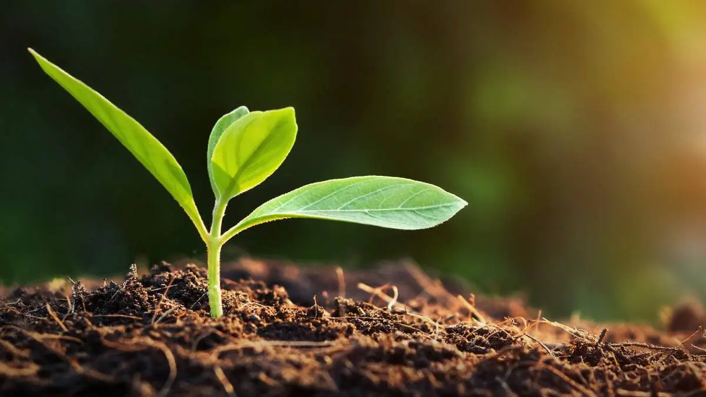
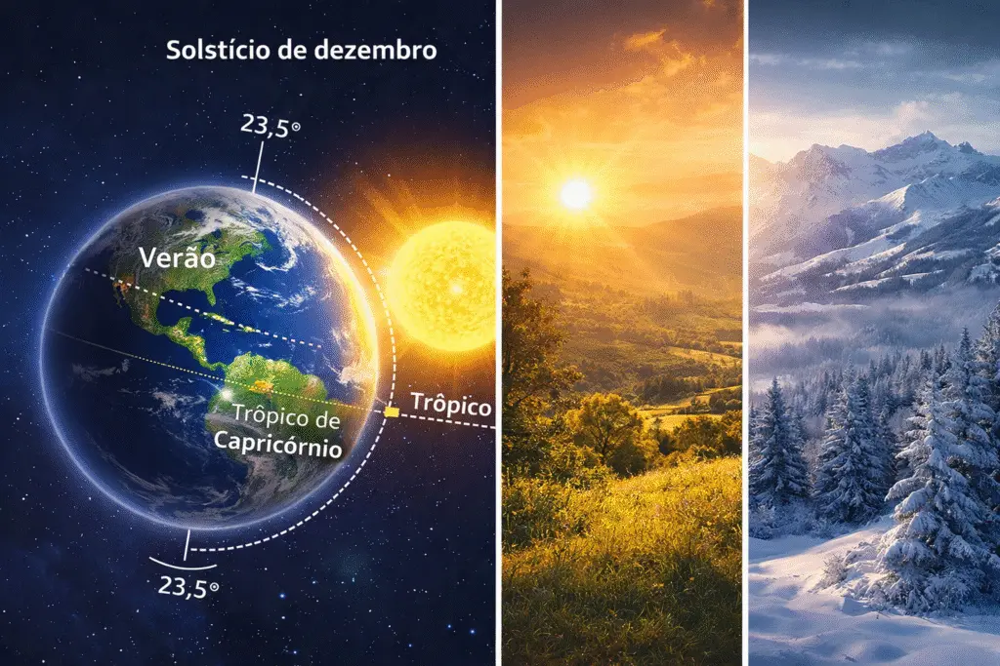

🌍 A Terra: O Equilíbrio Raro
A Terra é, até onde sabemos, o único planeta capaz de sustentar vida de forma complexa e contínua. Isso não acontece por acaso, mas por uma combinação extremamente específica de fatores. Sua distância em relação ao Sol permite a existência de água em estado líquido — um dos elementos mais importantes para a vida.
Além disso, sua atmosfera rica em nitrogênio e oxigênio cria uma camada protetora que regula a temperatura e filtra radiações perigosas.
A Terra não é comum — ela é uma exceção
Outro ponto essencial é o campo magnético terrestre, que atua como um escudo invisível contra partículas solares altamente energéticas. Sem ele, a atmosfera poderia ser lentamente destruída, como ocorreu em Marte.
Quando analisamos esses fatores em conjunto, fica claro que a Terra não é apenas habitável — ela é resultado de um equilíbrio delicado, difícil de replicar.

🌱 Um Planeta Vivo em Constante Transformação
Diferente da maioria dos planetas do sistema solar, a Terra não é estática. Ela está em constante mudança, tanto na superfície quanto em seu interior.
Vulcões, terremotos e movimentos das placas tectônicas mostram que o planeta ainda é geologicamente ativo. Esses processos, apesar de muitas vezes destrutivos, são essenciais para a renovação da superfície e para a manutenção das condições que permitem a vida.
Um sistema em equilíbrio entre ordem e caos
A Terra abriga uma biodiversidade extremamente complexa. Milhões de espécies interagem em sistemas ecológicos interdependentes, criando um ambiente dinâmico e resiliente.
Comparada a gigantes gasosos como Júpiter ou ambientes extremos como Vênus, a Terra se destaca não pela força ou tamanho, mas pela sua capacidade de sustentar e adaptar a vida.
